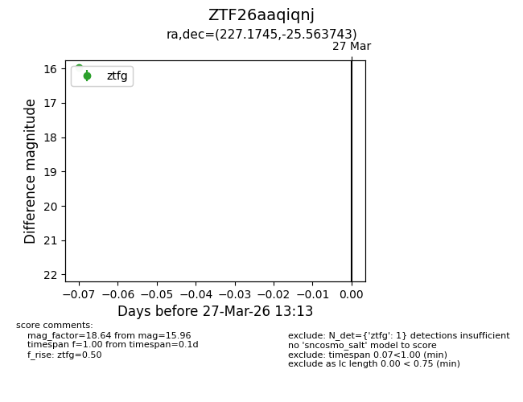
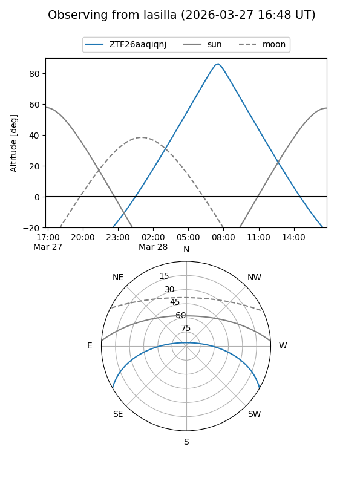
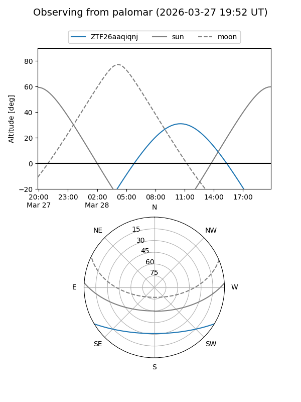

ZTF26aaqiqnj
Target ZTF26aaqiqnj at 2026-03-27 13:15
Aliases and brokers:
FINK: link
Lasair: link
ALeRCE: link
alt names
ZTF26aaqiqnj (ztf,fink_ztf)
Coordinates:
equatorial (ra, dec) = 227.1745,-25.56374
equatorial (HMS+DMS) = 15:08:41.88,-25:33:49.47
galactic (l, b) = (338.0248,+27.79837)
Flags:
Photometry:
last ztfg=15.96
1 ztfg detections
Lightcurve

Visibility


Additional plots